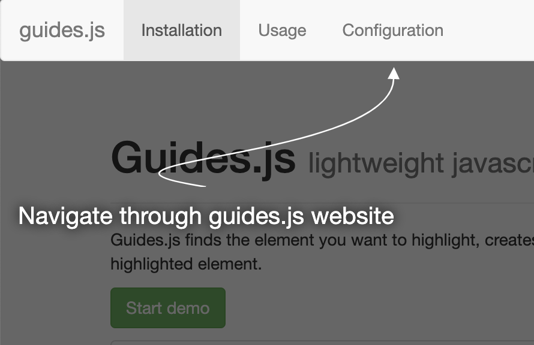

Guides.js
Lightweight JavaScript library for guided website toursGuides.js finds the element you want to highlight, creates a "tip" using the html you specified pointing to the highlighted element.

Installation
npm i guidesUsage
import Guides from 'guides';
const tour = new Guides({
color: 'white',
distance: 100,
guides: [{
html: 'Welcome to Guides.js'
}, {
target: document.querySelector('nav'),
html: 'Navigate through guides.js website'
}, {
target: document.querySelector('.demo'),
html: 'See how it works'
}, {
target: document.querySelector('#installation'),
html: 'Check out how to get started with guides.js'
}],
render: (event) => console.log(event),
start: (event) => console.log(event),
end: (event) => console.log(event),
next: (event) => console.log(event),
prev: (event) => console.log(event)
});
document.querySelectorAll('.demo').forEach((button) => {
button.addEventListener('click', () => tour.start());
});
Now the tour will start every time any of the .demo buttons are clicked.
Configuration
| Option Name | Type | Default Value | Description |
|---|---|---|---|
guides |
array | — | list of guides required |
distance |
number | 100 | distance between the tip and the highlighted element |
color |
string | '#fff' | arrows and text color |
start |
function | — | callback function called when the tour starts |
end |
function | — | callback function called when the tour ends |
next |
function | — | callback function called after moving to the next tip |
prev |
function | — | callback function called after moving to the previous tip |
render |
function | — | callback function called before guide is rendered |
For each guide in the guides array you can specify:
| Option Name | Type | Description |
|---|---|---|
html |
string | the tip's content - either plain text or markup required |
target |
DOM node | the element to highlight; if omitted the guide will be centered |
color |
string | arrows and text color; if omitted the global one will be used |
Methods
| Method Name | Description |
|---|---|
start |
starts the guided tour |
end |
exits the guided tour |
next |
moves to the next tip |
prev |
moves to the previous tip |